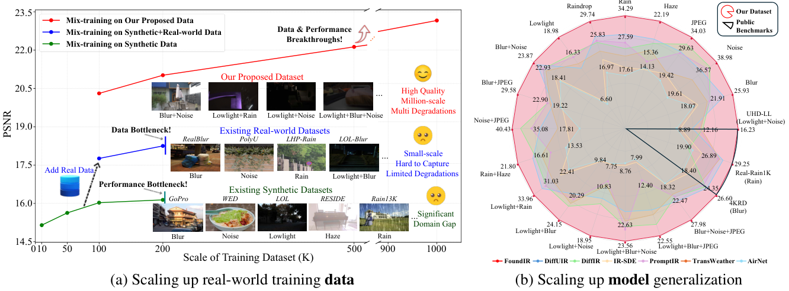

Despite the significant progress made by all-in-one models in universal image restoration,
existing methods suffer from a generalization bottleneck in real-world scenarios,
as they are mostly trained on small-scale synthetic datasets with limited degradations.
Therefore, large-scale high-quality real-world training data is urgently needed to facilitate the emergence of foundation models for image restoration.
To advance this field, we spare no effort in contributing a million-scale dataset with two notable advantages over existing training data:
larger-scale real-world samples, and higher-diversity data types.
By adjusting internal camera settings and external imaging conditions,
we can capture aligned image pairs using our well-designed data acquisition system over multiple rounds and our data alignment criterion.
Moreover, we propose a robust model, FoundIR, to better address a broader range of restoration tasks in real-world scenarios,
taking a further step toward foundation models.
Specifically, we first utilize a diffusion-based generalist model to remove degradations by learning the degradation-agnostic common representations from diverse inputs,
where incremental learning strategy is adopted to better guide model training.
To refine the model's restoration capability in complex scenarios,
we introduce degradation-aware specialist models for achieving final high-quality results.
Extensive experiments show the value of our dataset and the effectiveness of our method.